Lección 2: Figma - Herramientas de Diseño
Objetivo: Documentar los comandos más utilizados en Figma para el diseño de interfaces, con capturas y ejemplos.
⬅ Volver al inicio📋 Contenido a incluir
- Herramientas de selección y manipulación
- Herramientas de dibujo (formas, vectores, texto)
- Comandos de alineación y distribución
- Trabajo con componentes y estilos
- Herramientas de prototipado
🎯 Para cada comando: qué hace, cuándo usarlo, capturas y ejemplo práctico.
1) Herramientas de selección y manipulación
1.1 Move Tool (V) - Seleccionar y mover
Qué hace: Selecciona objetos y los mueve por el lienzo.
Cuándo usarlo: Para ajustar la posición de elementos como botones, textos o tarjetas.
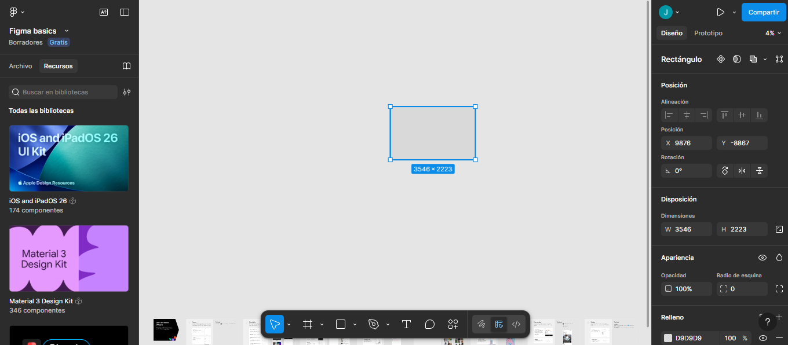
🧪 Ejemplo práctico
Se seleccionó un rectángulo con la herramienta V y se movió a otra parte del lienzo para acomodar el diseño.
1.2 Scale Tool (K) - Escalar
Qué hace: Escala un objeto de forma proporcional (aumentar o reducir tamaño).
Cuándo usarlo: Para agrandar o reducir grupos, iconos o componentes rápidamente.
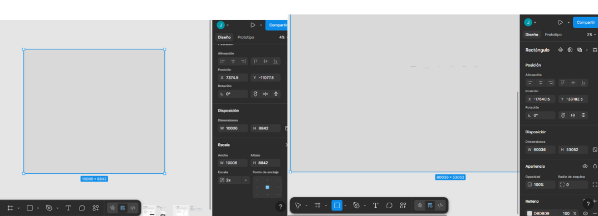
2) Herramientas de dibujo (formas, vectores, texto)
2.1 Rectangle (R) - Rectángulo
Qué hace: Crea rectángulos (base de botones, tarjetas, contenedores).
Cuándo usarlo: Para crear botones, cards, fondos, inputs, etc.
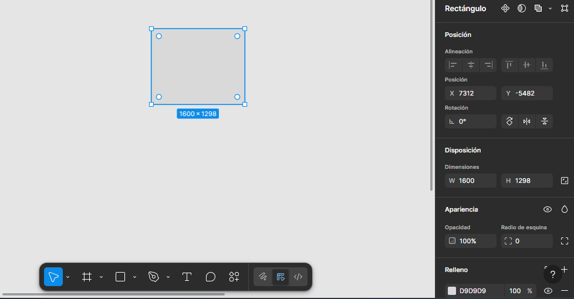
2.2 Pen (P) - Vector / Pluma
Qué hace: Crea formas personalizadas usando nodos (vectores).
Cuándo usarlo: Para diseñar íconos simples o formas únicas.
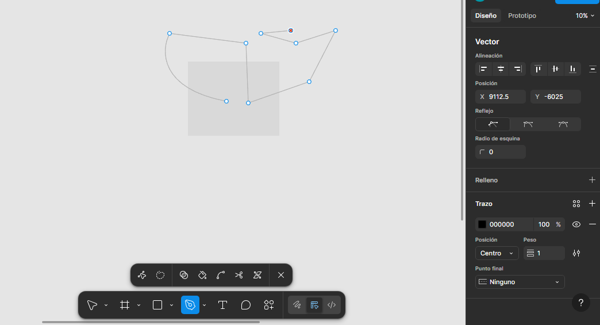
2.3 Text (T) - Texto
Qué hace: Inserta texto (títulos, labels, párrafos).
Cuándo usarlo: Para escribir contenido y definir jerarquía visual en la interfaz.
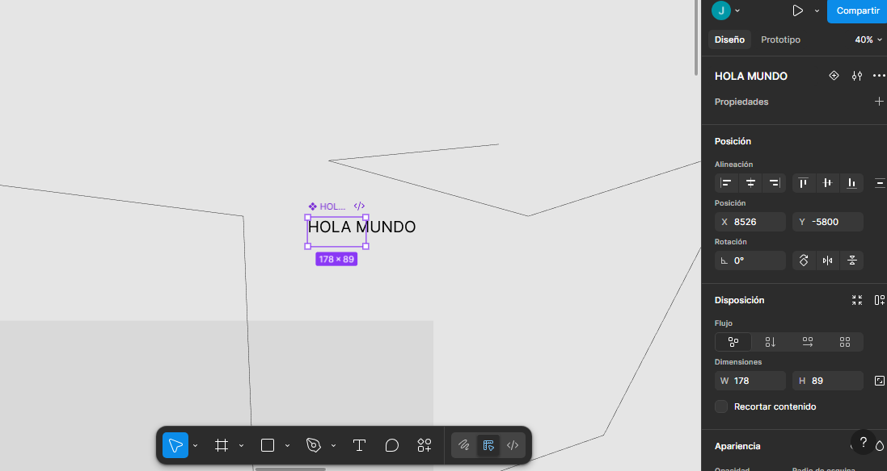
3) Comandos de alineación y distribución
3.1 Align (Alinear) - Panel superior
Qué hace: Alinea objetos (izquierda, centro, derecha, arriba, medio, abajo).
Cuándo usarlo: Cuando varios elementos deben quedar perfectamente alineados.
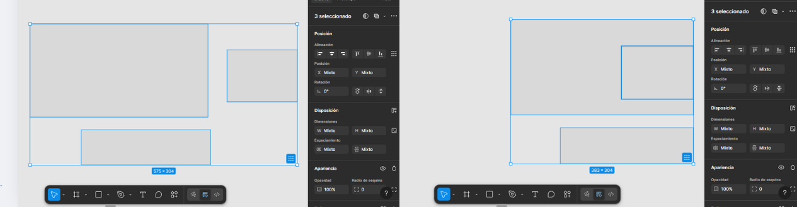
3.2 Distribute (Distribuir)
Qué hace: Reparte el espacio de forma uniforme entre varios objetos.
Cuándo usarlo: Cuando quieres que la separación entre elementos sea igual.
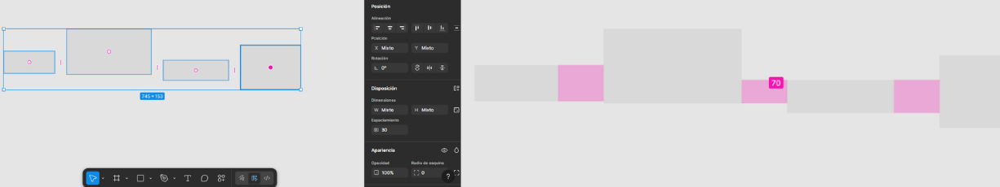
4) Componentes y estilos
4.1 Components (Crear componente)
Qué hace: Convierte un elemento en componente reutilizable.
Cuándo usarlo: Cuando repetirás botones, cards, inputs, etc.
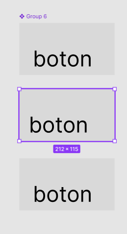
4.2 Styles (Colores, Tipografía)
Qué hace: Guarda estilos de color y texto para reutilizarlos y mantener consistencia.
Cuándo usarlo: Cuando quieres que toda la interfaz mantenga el mismo estilo visual.
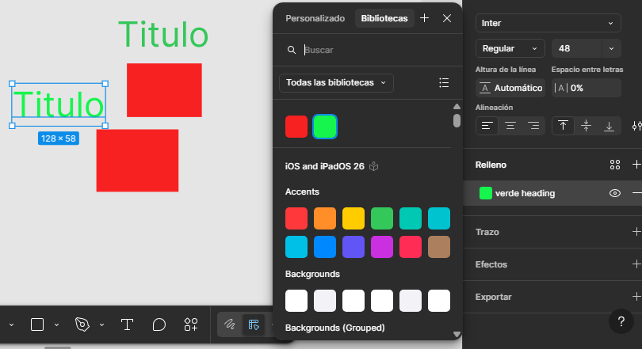
5) Herramientas de prototipado
5.1 Prototype: Interactions (Click / Navigate)
Qué hace: Conecta pantallas y crea interacciones (click → navegar).
Cuándo usarlo: Para simular el flujo real de navegación de una app/web.
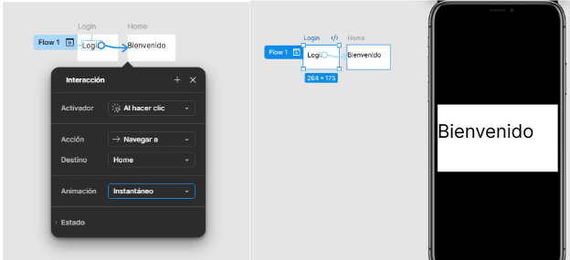
5.2 Present (Reproducir prototipo)
Qué hace: Reproduce el prototipo como si fuera una app real.
Cuándo usarlo: Para presentar tu diseño y probar que la navegación funciona.
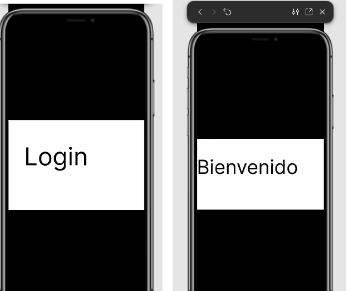